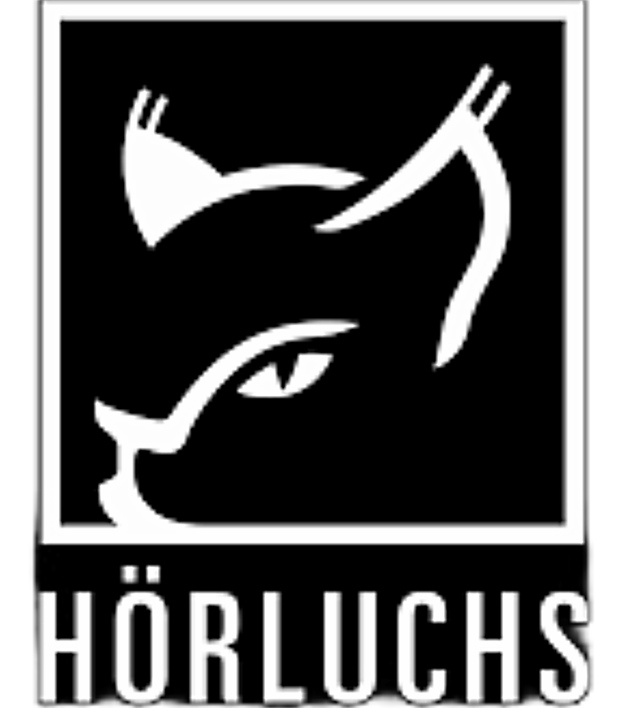
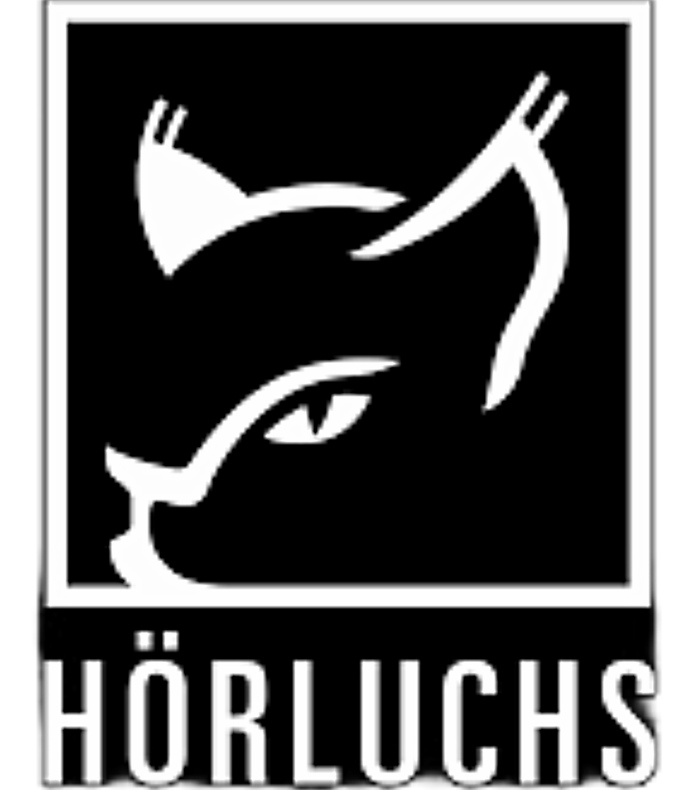

Santino Scavelli
Rhythm, Innovation, Tradition


.png) 


Santino Scavelli ist einer der aufregendsten Newcomer der Weltmusik-Szene. Mit seinem einzigartigen Stil und Können hat er bereits mehrere renommierte Auszeichnungen erhalten, darunter den Framedrum Award 2018, den Youtube Early Career Award 2019 und den Meinl Outstanding Performance Award 2023 .
Als Musical Director am Nationaltheater Mannheim und durch seine Zusammenarbeit mit Künstlern wie Anika Nilles, Zohar Fresco und Andrea Piccioni hat er international Anerkennung gefunden. Seine Projekte wie das "Pulse Project" und "Pour les Amis" zeigen seine Vielseitigkeit und kreative Vision.

Mit einem Doppelstudium in Trossingen (Drums und Latin Percussion) und an der Popakademie (Orientalische Percussion) hat Santino Scavelli ein tiefes Verständnis für rhythmische Kulturen weltweit entwickelt.
Mit über 15 Jahren Unterrichtserfahrung im Einzel- und Gruppenunterricht, gesammelt an Musikakademien und durch Workshopreihen deutschlandweit, bietet Santino Scavelli inspirierenden Unterricht für alle, die in die Welt des Rhythmus eintauchen möchten.

Santino Scavelli ist ein gefragter Studio-Musiker. In seinem Studio nimmt er für renommierte Künstler (Anika Nilles, Viktor) ihre Alben auf – sei es Percussion, Drums oder beides.
Besonders gefragt ist sein selbstgebautes hybrides Set, das er "Split-Set" nennt. Dieses eignet sich hervorragend für organisch-elektronische Beats sowie für folkloristische Musik. Macht euch selbst ein Bild davon und klickt unten auf "Mehr".